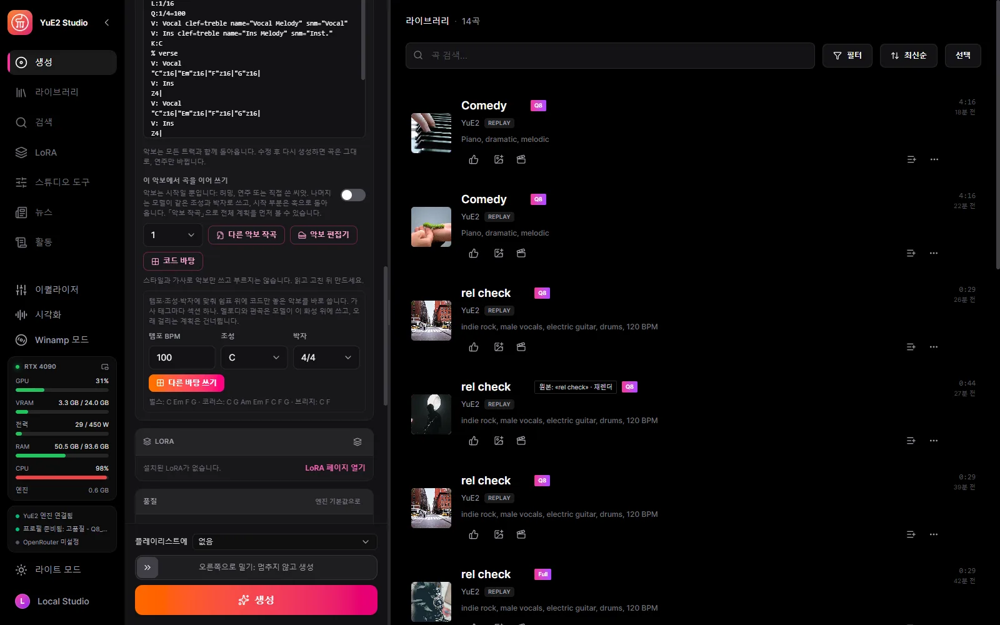

편집 가능한 악보

곡은 ABC 표기로 돌아와 악보로 그려집니다.
YuE2를 위한 데스크톱 스튜디오입니다.
Windows 10/11 x64와 VRAM 6 GB 이상의 그래픽카드: NVIDIA(GTX 900 이상)는 CUDA로 동작하며 AMD와 Intel의 Vulkan은 실험적입니다. 모델은 스튜디오 안에서 원할 때 내려받습니다.

새로 설치한 스튜디오와 권장 세트로 만들었고, 스튜디오가 저장한 그대로입니다. 영어, 스페인어, 중국어, 일본어, 러시아어.
곡은 ABC 표기로 돌아와 악보로 그려집니다.

SheetSage2가 녹음의 멜로디를 악보로 받아 적고, YuE2가 내 스타일로 부릅니다.

노래, 스템, 처리된 테이크를 GPU의 MuScriptor가 다중 악기 MIDI(34개 악기 그룹과 드럼)로 바꿉니다.

한 아티스트나 스타일의 곡들로 HOT-Step의 트레이너와 레시피를 써서 내 GPU에서 LoRA를 학습합니다.

커버가 없는 트랙은 스타일에 맞는 Wikimedia Commons의 무료 CC0 사진, 21가지 스타일의 무늬, 또는 OpenRouter로 생성한 커버를 받습니다.

Claude Code, Claude Desktop, Cursor를 연결하면 에이전트가 스튜디오의 모든 일을 합니다.
커뮤니티가 만든 영상 리뷰와 튜토리얼.
리뷰나 튜토리얼을 만드셨나요? 설명란에 프로젝트 링크를 넣어 주세요. 좋은 작품은 여기에 소개됩니다. 제보는 다음에서: Issues →
스튜디오 그대로, 여러분의 언어로.



3분짜리 노래가 그래픽 카드별로 얼마나 걸리는지입니다. YuE2 Studio 설치본이 30일 동안 보고한 평균입니다(버전 3.8, 모델 불러오기 포함. 사람마다 쓰는 모델 세트가 달라 결과가 다를 수 있습니다).
| 내 그래픽 카드 | 3분짜리 노래 | 속도 |
|---|---|---|
| NVIDIA, 24 GB 이상 | 약 1분 | 실시간의 2.7배 |
| NVIDIA, 16 GB | 약 2분 | 1.6× |
| NVIDIA, 12 GB | 약 2분 | 1.4× |
| NVIDIA, 8 GB 이하 | 약 5분 | 0.6× |
| AMD, 16 GB 이상 (Vulkan) | 3–4분 | 0.9× |
| Intel Arc, 12 GB (Vulkan) | 약 7분 | 0.4× |
| Apple 실리콘, 24 GB 이상 | 약 8분 | 0.4× |
| Apple 실리콘, 16 GB | 약 15분 | 0.2× |
| AMD, 8 GB 이하 (Vulkan) | 약 1시간 | 0.05× |
| 그래픽 카드 없음 (프로세서) | 약 2.5시간 | 0.02× |
우리 컴퓨터(RTX 4090, Ryzen 9 9950X3D, Windows 11, Q8_0 세트)에서는 1분 노래 20초, 4분 노래 54초, 10분 노래 약 3분이 걸리며, 작업 중 카드는 5–8 GB를 씁니다.
4.0.0 개발 빌드 · Windows 11 · Ryzen 9 9950X3D · RTX 4090 24 GB · CUDA 13
| 모델 및 엔진 | 오디오 길이 | 소요 시간 | 속도 | 최대 VRAM |
|---|---|---|---|---|
| YuE2 · yue2.cpp · Q8_0 · Flash Attention | 60 s | 20.0 s | 3.0× | 5045 MiB |
| YuE2 · yue2.cpp · Q8_0 · Flash Attention | 240 s | 54.4 s | 4.4× | 6500 MiB |
| MiniMax Music3 · minimaxmusic.cpp · Q8_0 · 30 steps · CFG 1.5 | 30 s | 33.0 s | 0.9× | — |
Windows · RTX 4090 · 617.42 · Turbo Q8_0 · 30 s · Euler × 8
| 백엔드 | 시작부터 첫 WAV까지 | 예열 후 중앙값 (3회) | 예열 후 속도 | GPU 전체 최대 VRAM | 프로세스 트리 최대 RAM |
|---|---|---|---|---|---|
| CUDA 13 | 6.813 s | 0.474 s | 63.3× | 12.00 GiB | 1.97 GiB |
| Vulkan | 19.063 s | 0.507 s | 59.2× | 12.42 GiB | 2.66 GiB |
시드 42에서 두 WAV 모두 48 kHz 스테레오로 30.0초입니다. 두 채널을 함께 100 ms 단위로 측정한 RMS는 CUDA에서 마지막 5.3초, Vulkan에서 마지막 5.0초 동안 −60 dBFS 미만이었습니다. 속도는 WAV 전체 길이로 계산했습니다.
Windows 11, RTX 4090, 드라이버 617.42. 첫 실행은 서버 시작부터 첫 WAV 응답까지입니다. 재실행은 같은 서버에 보낸 3개 요청의 중앙값입니다. 메모리는 첫 실행의 전체 GPU 및 프로세스 트리 RSS 최대값입니다. 같은 작업에서 가중치, 무음 구간 및 빌드 버전을 확인하세요. 웜 요청 전 VRAM은 세 요청 직전에 측정한 전체 GPU 사용량의 중앙값입니다. 상주 WDDM VRAM과 RSS는 출시된 CUDA 13 빌드를 한 번 예열한 후 유휴 상태의 프로세스 트리에서 측정한 세 값의 중앙값입니다.
| 모델 및 엔진 | 백엔드 | WAV (초) | 첫 실행 (초) | 재실행 (초) | 오디오 초/초 | VRAM 최대 / 증가 (GiB) | 웜 요청 전 VRAM (GiB) | RAM 최대 (GiB) | 상주 WDDM VRAM / RSS (GiB) |
|---|---|---|---|---|---|---|---|---|---|
| YuE2 · yue2.cpp 892b9b0 · 3B Q8_0 + F32 VAE; NAR v9 · 30 s · 32 steps | CUDA 13 | 29.999 | 8.813 | 4.759 | 6.30× | 8.13 / +5.75 | 8.13 | 3.37 | — |
| YuE2 · yue2.cpp 892b9b0 · 3B Q8_0 + F32 VAE; NAR v9 · 30 s · 32 steps | Vulkan | 29.999 | 16.609 | 5.861 | 5.12× | 8.19 / +5.81 | 8.87 | 3.08 | — |
| YuE2 · audio.cpp 41242418 · 3B Q8_0 + F16 VAE; NAR v9 · 30 s · 32 steps | CUDA 13 | 29.999 | 16.807 | 7.441 | 4.03× | 7.02 / +4.68 | 3.16 | 6.24 | — |
| YuE2 · audio.cpp 41242418 · 3B Q8_0 + F16 VAE; NAR v9 · 30 s · 32 steps | Vulkan | 29.999 | 28.258 | 10.286 | 2.92× | 6.44 / +4.51 | 2.54 | 6.85 | — |
| YuE2 · yue2.cpp 892b9b0 · 3B Q8_0 + F32 VAE; NAR v9 · 100 tokens · 2 steps | CUDA 13 | 3.999 | 6.516 | 0.172 | 23.20× | 6.88 / +4.51 | 6.88 | 3.40 | — |
| YuE2 · audio.cpp 41242418 · 3B Q8_0 + F16 VAE; NAR v9 · 100 tokens · 2 steps | CUDA 13 | 3.999 | 7.482 | 0.383 | 10.44× | 6.28 / +3.92 | 3.03 | 5.84 | — |
| YuE2 · yue2.cpp 892b9b0 · 3B Q8_0 + F32 VAE; NAR v9 · 100 tokens · 2 steps | CUDA 12 | 3.999 | 4.969 | 0.125 | 31.95× | 6.88 / +4.50 | 6.88 | 3.45 | — |
| YuE2 · audio.cpp 41242418 · 3B Q8_0 + F16 VAE; NAR v9 · 100 tokens · 2 steps | CUDA 12 | 3.999 | 7.869 | 0.420 | 9.52× | 6.46 / +4.10 | 3.03 | 5.76 | — |
| YuE2 · yue2.cpp 892b9b0 · 3B Q8_0 + F32 VAE; NAR v9 · 100 tokens · 2 steps | Vulkan | 3.999 | 13.766 | 0.252 | 15.88× | 6.54 / +4.17 | 6.54 | 3.82 | — |
| YuE2 · audio.cpp 41242418 · 3B Q8_0 + F16 VAE; NAR v9 · 100 tokens · 2 steps | Vulkan | 3.999 | 8.373 | 0.974 | 4.11× | 6.31 / +3.94 | 2.89 | 5.33 | — |
| ACE-Step 1.5 · acestep.cpp 6e0e414 · Turbo Q8_0 + BF16 embedder/VAE · 30 s · 8 Euler steps | CUDA 13 | 30.000 | 6.234 | 0.392 | 76.51× | 9.73 / +7.80 | 9.74 | 2.11 | — |
| ACE-Step 1.5 · acestep.cpp 6e0e414 · Turbo Q8_0 + BF16 embedder/VAE · 30 s · 8 Euler steps | Vulkan | 30.000 | 7.204 | 0.381 | 78.69× | 8.58 / +6.65 | 8.57 | 2.00 | — |
| ACE-Step 1.5 · audio.cpp 41242418 · Turbo Q8_0, packed GGUF · 30 s · 8 Euler steps | CUDA 13 | 30.000 | 10.512 | 1.387 | 21.62× | 10.43 / +8.49 | 10.48 | 2.58 | — |
| ACE-Step 1.5 · audio.cpp 41242418 · Turbo Q8_0, packed GGUF · 30 s · 8 Euler steps | Vulkan | 30.000 | 21.746 | 2.237 | 13.41× | 10.23 / +8.30 | 10.22 | 4.60 | — |
| MiniMax Music3 · minimaxmusic.cpp b79d37f · Minimal Q3_K_M / Q4_K_M + F32 vocoder · 3.2 s · 2 steps | CUDA 13 | 3.193 | 7.422 | 1.075 | 2.97× | 9.18 / +7.25 | 9.18 | 4.53 | — |
| MiniMax Music3 · minimaxmusic.cpp b79d37f · Quality Q8_0 + F32 vocoder · 3.2 s · 2 steps | CUDA 13 | 3.193 | 13.485 | 1.728 | 1.85× | 15.04 / +13.10 | 15.04 | 8.71 | — |
| MiniMax Music3 · minimaxmusic.cpp b79d37f · Minimal Q3_K_M / Q4_K_M + F32 vocoder · 3.2 s · 2 steps | Vulkan | 3.193 | 6.344 | 1.484 | 2.15× | 8.83 / +6.90 | 8.83 | 4.34 | — |
| MiniMax Music3 · minimaxmusic.cpp b79d37f · Quality Q8_0 + F32 vocoder · 3.2 s · 2 steps | Vulkan | 3.193 | 14.578 | 1.924 | 1.66× | 14.69 / +12.76 | 14.69 | 8.54 | — |
| MiniMax Music3 Studio v4.0.3 · minimaxmusic.cpp f476b0e · Minimal Q3_K_M / Q4_K_M + F32 · 3.2 s · 2 steps | CUDA 13 | 3.193 | 7.312 | 1.257 | 2.54× | 9.32 / +7.38 | 9.32 | 4.56 | 7.39 / 0.89 |
| MiniMax Music3 · minimaxmusic.cpp f476b0e · Quality Q8_0 + F32 vocoder · 3.2 s · 2 steps | CUDA 13 | 3.193 | 9.156 | 1.852 | 1.72× | 15.18 / +13.23 | 15.18 | 8.91 | — |
| MiniMax Music3 · minimaxmusic.cpp f476b0e · Minimal Q3_K_M / Q4_K_M + F32 · 3.2 s · 2 steps | Vulkan | 3.193 | 7.343 | 1.987 | 1.61× | 8.96 / +7.03 | 8.96 | 4.33 | — |
| MiniMax Music3 · minimaxmusic.cpp f476b0e · Quality Q8_0 + F32 vocoder · 3.2 s · 2 steps | Vulkan | 3.193 | 16.047 | 2.295 | 1.39× | 14.94 / +13.00 | 14.94 | 8.35 | — |
| MiniMax Music3 · audio.cpp 41242418 · LM/depth/DiT Q8_0 · 3.2 s · 2 steps | CUDA 13 | 3.193 | 14.604 | 8.720 | 0.37× | 10.97 / +9.04 | 2.47 | 8.87 | — |
| MiniMax Music3 · audio.cpp 41242418 · LM/depth/DiT Q8_0 · 3.2 s · 2 steps | Vulkan | 3.193 | 17.621 | 10.478 | 0.30× | 10.65 / +8.72 | 2.39 | 8.66 | — |
| Stable Audio 3 · HOT-Step cdef1b0d67af · Medium BF16/F16 · 4 s · 4 steps | CUDA 12.8 | 4.000 | 6.737 | 0.254 | 15.72× | 9.30 / +7.37 | 9.30 | 2.82 | — |
| Stable Audio 3 · audio.cpp 41242418 · Small Music Q8_0 · 4 s · 4 steps | CUDA 12 | 4.000 | 1.259 | 0.078 | 51.18× | 3.54 / +1.60 | 3.55 | 1.17 | — |
| Stable Audio 3 · audio.cpp 41242418 · Small Music Q8_0 · 4 s · 4 steps | CUDA 13 | 4.000 | 1.893 | 0.071 | 56.00× | 3.53 / +1.60 | 3.54 | 1.18 | — |
| YuE2 Studio v4.1.1 · yue2.cpp 67f59c1 · 3B Q8_0 + F32 VAE · 100 tokens · 2 steps | CUDA 13 | 3.999 | — | — | — | — | — | — | 4.61 / 0.65 |
| ACE-Step Studio v4.0.2 · acestep.cpp 9eb75e8 · Turbo Q8_0 + BF16 embedder/VAE · 30 s · 8 Euler steps | CUDA 13 | 30.000 | — | — | — | — | — | — | 9.51 / 0.78 |
Windows, AMD Radeon Graphics(gfx1036, UMA). 같은 audio.cpp 리비전으로 각 백엔드에서 4단계로 4초를 생성했습니다. 첫 실행은 첫 번째 결과이고 재실행은 요청 세 건의 중앙값입니다. WDDM 전용 및 공유 메모리 피크는 1초 간격으로 측정했습니다. audio.cpp 5e7273db
| 백엔드 | 첫 실행 (초) | 재실행 (초) | WDDM 전용 피크 (GiB) | WDDM 공유 피크 (GiB) |
|---|---|---|---|---|
| HIP | 4.609 | 2.953 | 1.39 | 0.04 |
| Vulkan | 6.281 | 3.454 | 1.17 | 0.38 |
같은 Radeon 내장 GPU에서 저장된 12초 곡을 4단계로 다시 생성했습니다. 콜드 측정에는 프로세스 시작 시간이 포함됩니다. 웜 측정은 가중치를 메모리에 유지한 세 요청의 중앙값입니다. WDDM 최댓값은 이 GPU에서 해당 프로세스의 메모리를 측정한 값입니다.
| 백엔드 | 첫 실행 (초) | 재실행 (초) | WDDM 전용 피크 (GiB) | WDDM 공유 피크 (GiB) |
|---|---|---|---|---|
| HIP 188d13b3 | 22.749 | 18.483 | 0.28 | 4.39 |
| Vulkan 892b9b03 | 30.923 | 24.438 | 1.82 | 2.59 |
Windows 10/11 x64와 VRAM 6 GB 이상의 그래픽카드: NVIDIA(GTX 900 이상)는 CUDA로 동작하며 AMD와 Intel의 Vulkan은 실험적입니다. 모델은 스튜디오 안에서 원할 때 내려받습니다.
실행 가능한 세트는 YuE2-3B 백본과 VAE입니다. SheetSage2는 선택 사항이며 커버에만 필요합니다.
| 내 GPU | 세트 | 다운로드 |
|---|---|---|
| 12 GB+ | 풀 네이티브 — BF16, 원본 가중치 | 9.7 GB |
| 8 GB+ | 고품질 — Q8_0, 거의 무손실 | 4.9 GB |
| 7 GB+ | 균형 — Q6_K | 4.0 GB |
| 5.5 GB+ | 라이트 — Q5_K_M | 3.6 GB |
크기는 SheetSage2를 포함합니다. 스튜디오가 그래픽카드에서 돌아가는 세트를 미리 골라 주지만, 다운로드는 언제나 내 결정입니다. 모든 파일은 고정된 Hugging Face 리비전에 대해 SHA-256으로 검증되며, 중단된 다운로드는 이어받습니다.
네. 스튜디오는 무료 오픈 소스이며, 모델도 스튜디오 안에서 무료로 내려받습니다.
내 음악은 내 것이고, 내 디스크에 남습니다.
스튜디오와 yue2.cpp는 MIT입니다. YuE2-3B와 YuE2 VAE 가중치는 개인 창작자 허가가 붙은 CC BY-NC 4.0으로, 개인으로 활동하는 음악가와 창작자는 만든 곡을 판매하고 수익화할 수 있습니다. 기업은 저자에게 라이선스를 받아야 합니다. 커버에 쓰는 SheetSage2는 CC BY-NC 4.0입니다.
한 아티스트나 스타일의 곡들로 HOT-Step의 트레이너와 레시피를 써서 내 GPU에서 LoRA를 학습합니다. 모든 설정을 바꿀 수 있고, 데이터셋은 이 스튜디오와 MiniMax Music3 Studio 사이를 오갑니다.
Claude Code, Claude Desktop, Cursor를 연결하면 에이전트가 스튜디오의 모든 일을 합니다. 곡을 쓰고 생성하고, 데이터셋을 채워 학습하고, 커버를 그리고, 비디오 편집기에서 클립을 만들고, 곡을 재생하며, 창을 보고 버튼을 누릅니다. 모델용 작성 규칙이 함께 제공되어 스타일과 가사는 에이전트가 직접 씁니다. 작사 도우미로 고르면 로컬 모델 대신 에이전트가 씁니다.
기본은 모두 로컬. 클라우드 키는 선택한 기능을 위해 직접 추가합니다.
| 구성 요소 | 실행 위치 | 크기 |
|---|---|---|
| YuE2 엔진 (yue2.cpp) | 그래픽카드: CUDA, Vulkan 또는 프로세서 | 포함 |
| YuE2 모델 세트 | 내 GPU | 3.6–9.7 GB |
| NVIDIA cuBLAS | NVIDIA 카드 전용 | 391 MB, 한 번 |
| 가라오케 타이밍 — Parakeet 또는 Whisper | 내 컴퓨터 | 선택 |
| 스템 분리 — HT-Demucs | GPU 또는 CPU | 선택 |
| 작사 도우미 | 로컬 Gemma 또는 OpenRouter | 선택 |
| LoRA 학습 — HOT-Step ace-train | NVIDIA RTX 30 이상, VRAM 11 GB | 8 GB, 선택 |
| 곡을 듣고 설명 — MOSS-Music-8B | VRAM 약 12 GB | 10 GB, 선택 |
| VST3 호스트 — HOT-Step | 내 컴퓨터, 별도 프로세스 | 포함 |
| 오디오를 MIDI로 — MuScriptor (HOT-Step ace-midi) | NVIDIA GTX 16 / RTX 20 이상 | 0.5–5.6 GB, 선택 |
서비스는 데스크톱 실행 파일에 컴파일되어 C++ 엔진을 관리합니다. 완성된 곡은 서비스가 직접 가져오므로 새로 고침하거나 창을 닫아도 결과가 사라지지 않습니다.
React UI ─┐
├─ YuE2-Studio.exe (Tauri window + Rust/Axum service)
Rust axum ┘ │
└─ yue2.cpp `yue-server` (C++/CUDA, GGUF)